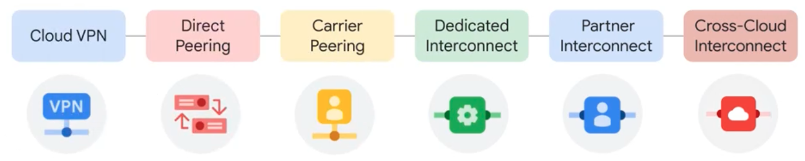

Network¶
VPC¶
GCPでは、VPCがグローバルリソースとして定義され、サブネットがリージョン単位で定義される。 そのため、AWSと比較してDRの設計がしやすいなど、以下のような特徴がある。
比較項目 |
GCP |
AWS |
補足・設計への影響 |
|---|---|---|---|
VPCのスコープ |
グローバル（全リージョン） |
リージョン単位 |
GCPでは1つのVPCで複数リージョンにまたがって構成可能 |
サブネットのスコープ |
リージョン |
AZ（アベイラビリティゾーン） |
GCPは1サブネットで複数ゾーンをカバー可能、AWSはゾーンごとにサブネットが必要 |
サブネット内のリソース配置 |
異なるゾーンにまたがって配置可能 |
単一ゾーンのみ（AZごとに分ける） |
GCPは高可用性構成がシンプル |
VPCピアリングの要否 |
通常は不要（単一VPCで多リージョン展開可能） |
リージョン間でVPCピアリングが必要 |
GCPの方がDR設計時のネットワーク構成が簡単 |
IPアドレス管理 |
RFC1918ベースでCIDR指定（自動／手動） |
同上 |
どちらもCIDRで管理する点は共通 |
ファイアウォール |
VPC単位（インスタンスにタグやサービスアカウント単位） |
セキュリティグループ＋ネットワークACL（サブネット単位） |
GCPは柔軟でルールをまとめやすい |
ルート制御 |
VPC全体で共通ルーティングテーブル |
サブネット単位のルートテーブル |
AWSはルート制御が細かいが複雑にもなりやすい |
ルートテーブル¶
GCPではVPC単位でのルートテーブルが作成され、サブネットに一括で適用される。 特定のVMなどにのみ適用したいルーティングのルールはタグなどを利用して適用できる。
ルートテーブルの構成要素としては以下のようなものがある。
要素 |
内容 |
例 |
|---|---|---|
宛先範囲（Destination Range） |
送信先のIP範囲（CIDR） |
0.0.0.0/0, 10.0.0.0/8 |
次ホップ（Next Hop） |
パケットの転送先 |
Internet Gateway、特定VM、VPN Gatewayなど |
優先度（Priority） |
数値が小さいほど優先される（デフォルト：1000） |
100～65535で指定可能 |
ターゲット（Target Tags） |
特定のVMタグにのみ適用できるルート |
web-server など |
FW¶
FWについても、VPC単位に適用され、VPC上のリソースに自動的に適用される。 一方で、ルートテーブル同様、タグやサービスアカウントを指定して制御も可能。 AWSのSGやWebACLのように細かい単位で、設定するような設計とはなっていない点に注意。
Cloud DNS¶
GCPでは、Cloud DNSを利用することで、所有しているドメインのDNSのホスティングが可能。 具体的には、ドメイン名（例: example.com）に対して以下のDNSレコードをホスティング（管理）している。
A レコード（IPアドレスの指定）
CNAME（別名）
MX（メール）
TXT（SPF、DKIMなど）
Cloud CDN¶
Cloud CDNは、アプリケーションの高速配信を目的としたCDNのサービスで、エッジキャシングサービス。 ALBのセットアップでチェックボックスをオンにするだけで簡単に統合することができる。
GCPとの直接通信¶
GCPのネットワーク環境と他のクラウドやオンプレミスとネットワークを接続するためには以下のような例が挙げられる。  Google Cloud Fundamentals: Core Infrastructure 日本語版
接続方法 |
概要 |
特徴・用途 |
|---|---|---|
Cloud VPN |
インターネット越しにVPNトンネルを張る |
暗号化された安全な接続。安価で簡単。可用性は中程度 |
Direct Peering |
GCPと直接BGPピアリングを張る |
インターネット経由だが高速・低レイテンシ。Googleサービスへの通信向け |
Carrier Peering |
通信事業者を経由してGCPとBGP接続 |
通信キャリアの網を通して安定した接続が可能。広域通信に向く |
Dedicated Interconnect |
GCPと物理的に専用線で接続 |
高帯域・低遅延・高可用性。本番用途や大規模システムに最適 |
Partner Interconnect |
提携パートナーを経由してGCPに専用接続 |
専用線レベルの品質をパートナー経由で柔軟に実現。拠点制約が少ない |
Cross-Cloud Interconnect |
他クラウドと専用線でGCPと接続 |
マルチクラウド構成を専用ネットワークでセキュアかつ高速に構築可能 |